self portraiture, collected
Over the past years, light-studies, experiments with costumes, wigs and and stories created a collection of alternative identities I slipped into. Immersion into different worlds became an important tool for my personal self-exploration. Collected from the last decade.
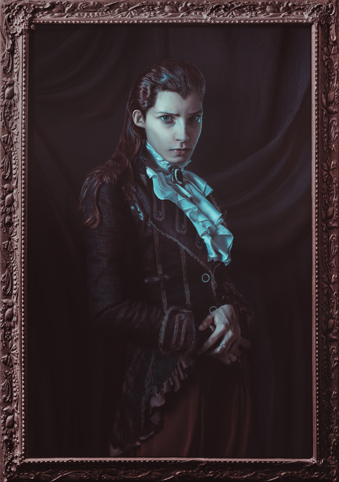
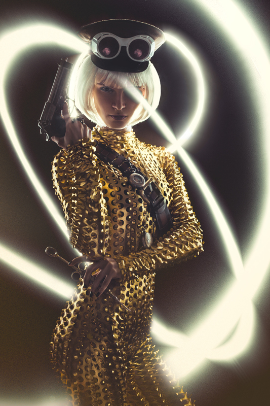
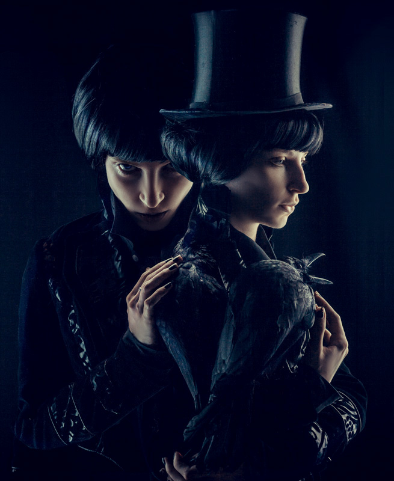
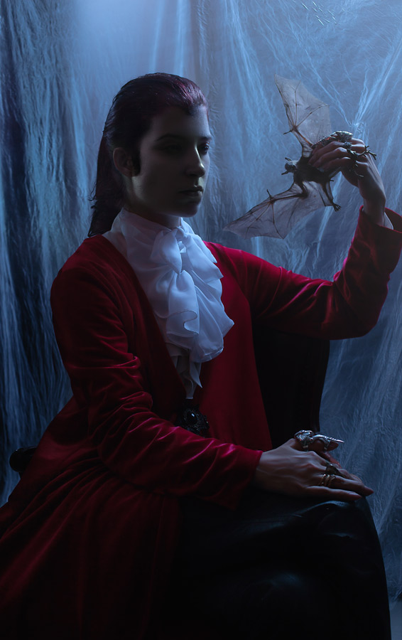
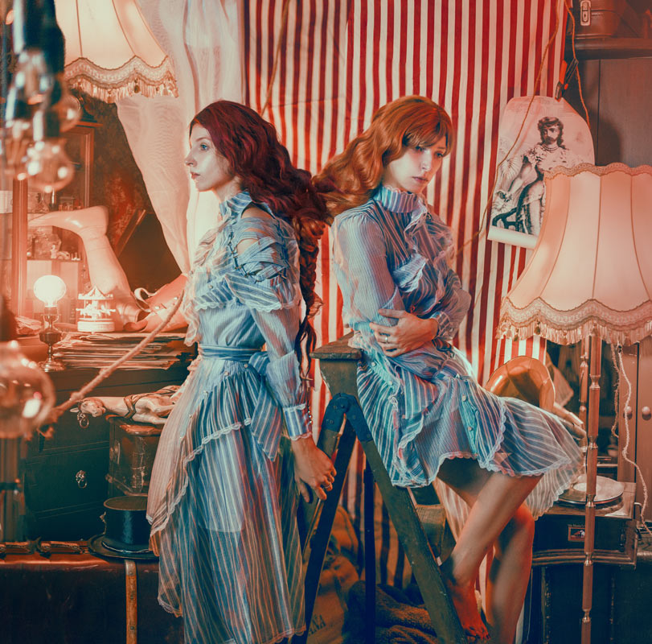
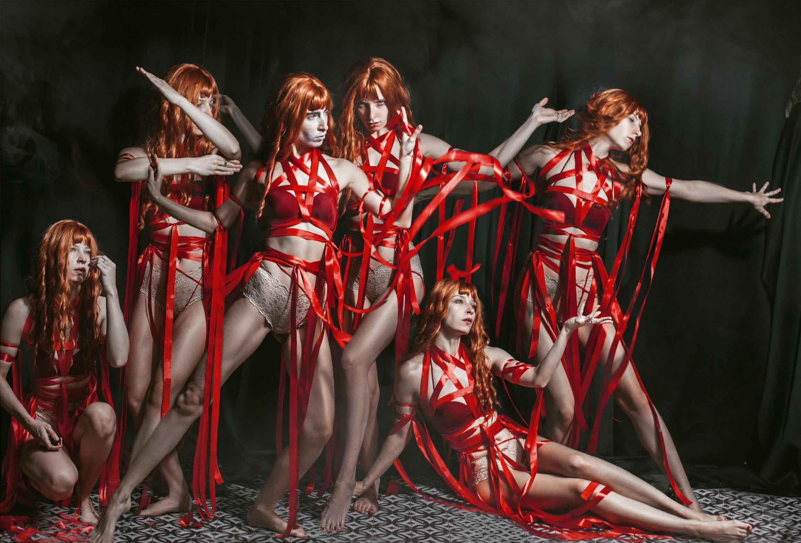
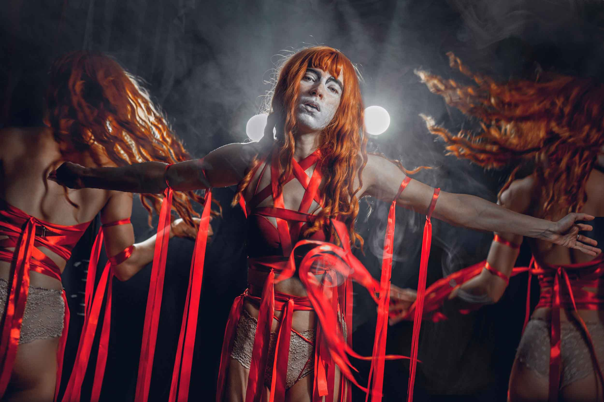
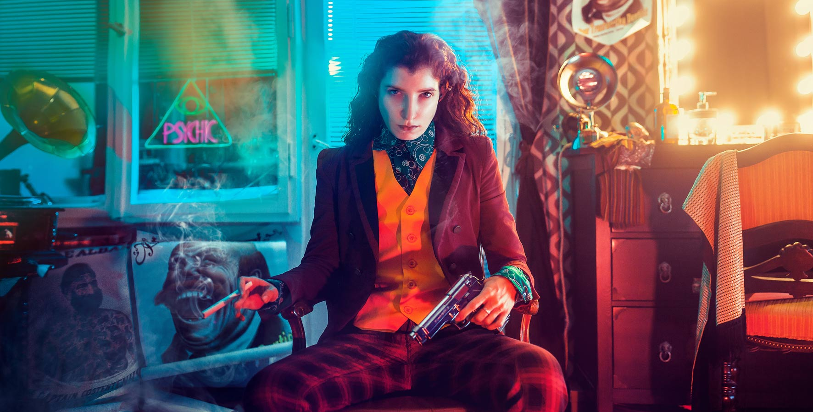
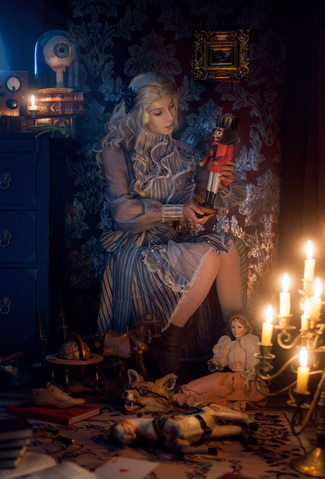
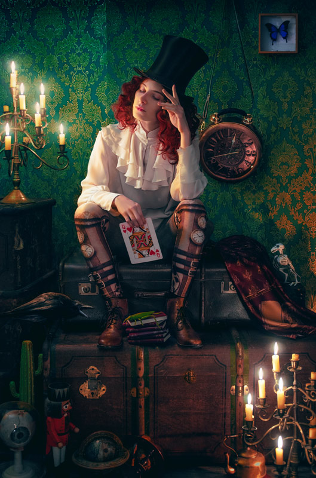
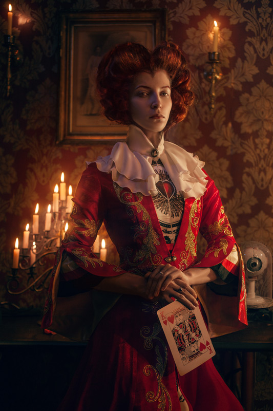
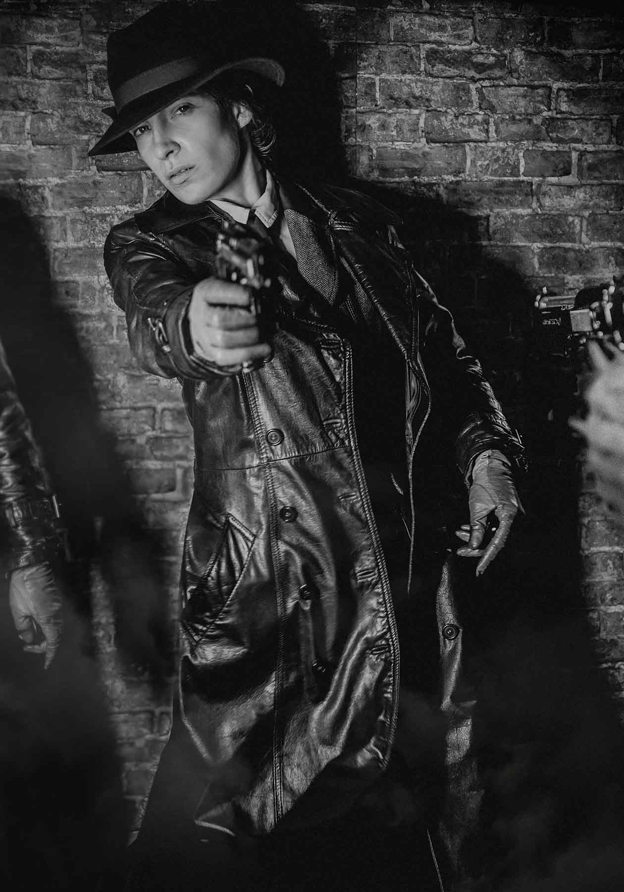
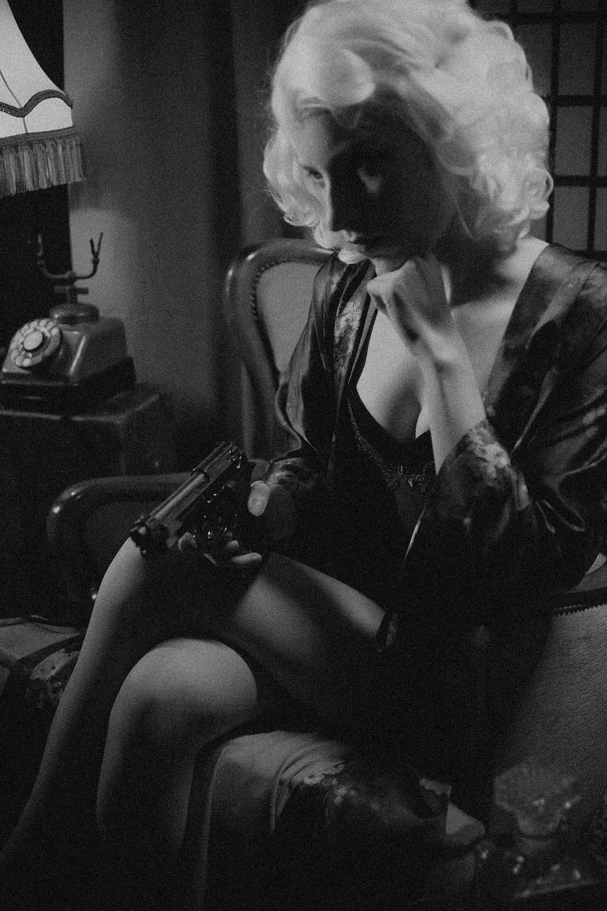
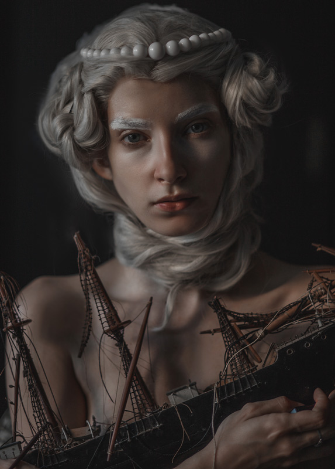
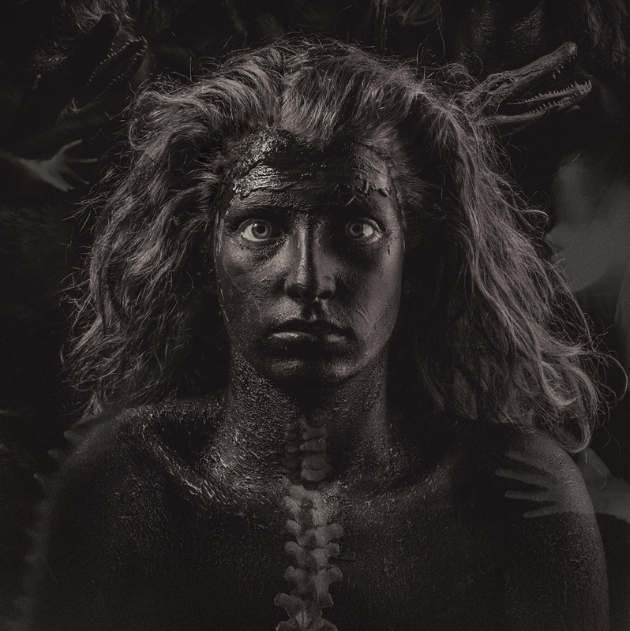